按你说的做了：图标按说话的人着色，线条加粗，分支各一种颜色。第三种视图“单线”：不缩进，分叉那行有“‹ 2/3 ›”，点一下或按左右键，后面的行直接换成那条分支；不在当前路径时左边竖线变色，底部按钮切过去。已合入，可以在开发服务里试，用过再定。
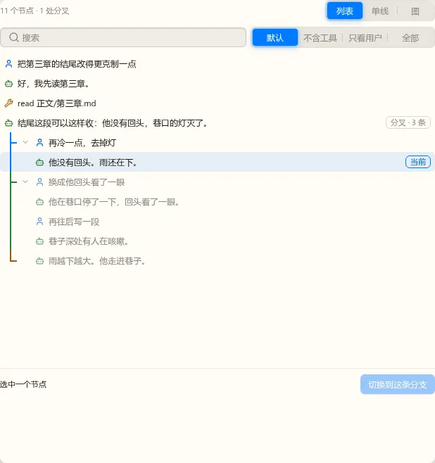
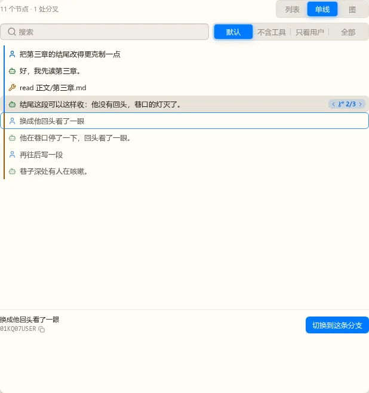
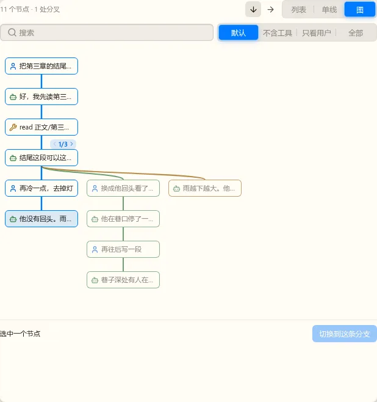
推荐先都留：列表能一眼看全部分支，单线适合沿着一条路径读，用途不重叠。多一个视图的代价只有切换器多一项。
按你定的两种视图写好并合入了，这是 Lab 里的真实组件（亮色）。从对话顶栏的“⋯”菜单打开。图的方向用右上角的两个箭头换，缺省从上往下；分叉节点上的“‹ 1/3 ›”把选中换到另一条分支，底部按钮才真的切过去。
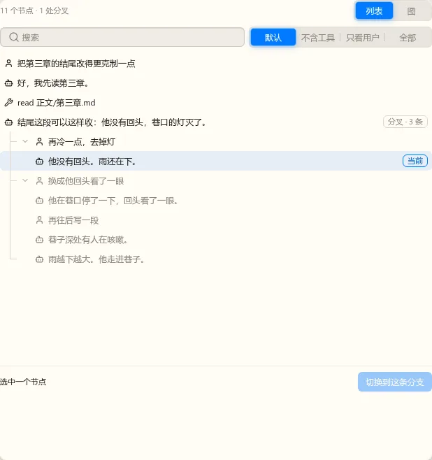
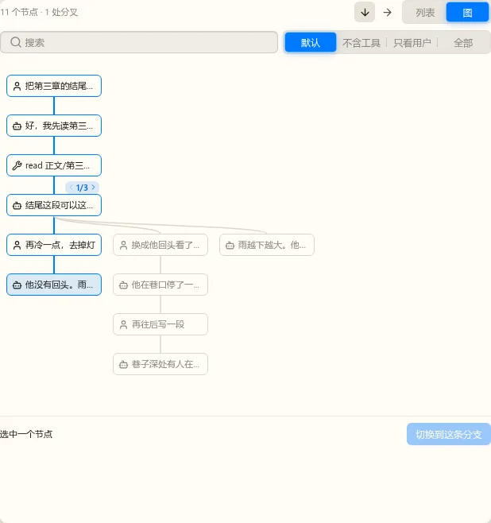
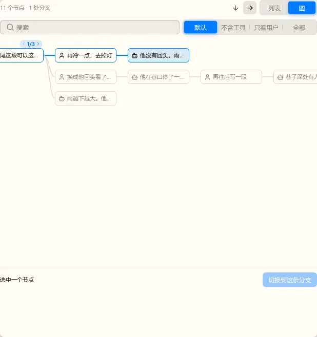
回到第 3 轮的线条树，不用框。上一稿看不出分支，这样改：当前路径的线条是强调色、别的线条灰但加粗；有分叉的那行右边一个醒目的“3 条分支”；当前路径的字亮、别的分支暗；你所在的那行有底色和“当前”。标题旁仍写“2 处分叉”。选中一行有描边，底部显示它和“切换到这条分支”。
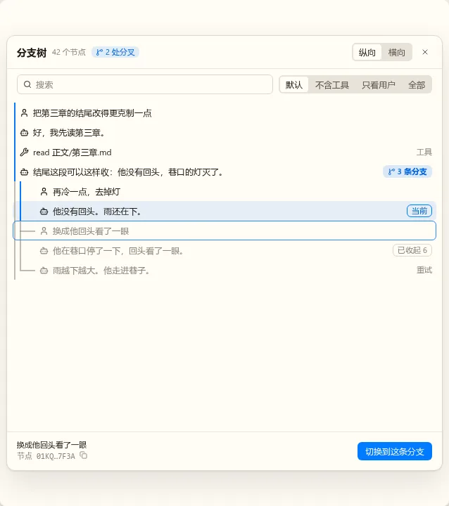
同一棵树横过来：时间从左到右，分支上下分道，线条和高亮的规则与纵向一样。分叉节点上方有“‹ 1 / 3 ›”，点一下把高亮的路径换到另一条分支（和点那条分支上的节点效果相同），底部的“切换到这条分支”才真的切过去。放不下时横竖都能滚，打开时滚到当前位置。搜索和过滤两种模式共用。
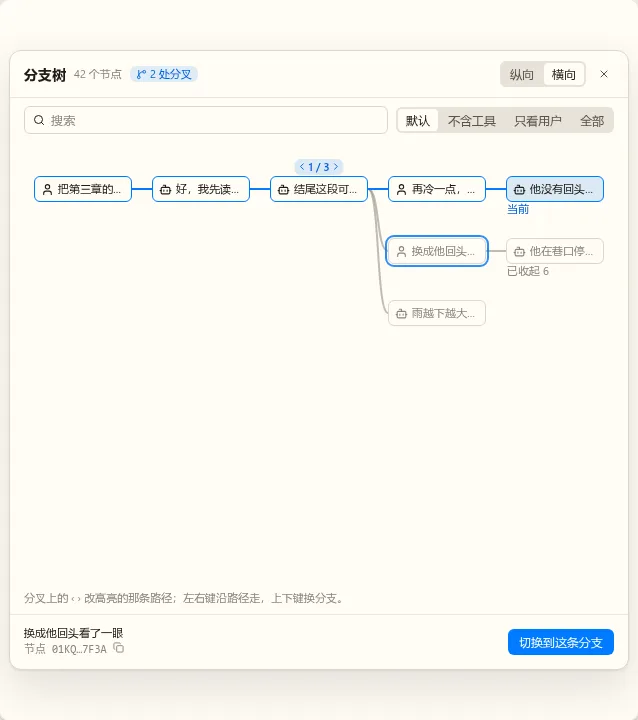
上一稿只靠线条，看不出有没有分支。这一稿：标题旁写“2 处分叉”；当前路径左边一条强调色的竖线；分叉处写“从这里分成 3 条”，每条分支一个框，当前的框高亮并标“当前路径”，别的框有“切换”；你所在的那行写“你在这里”。
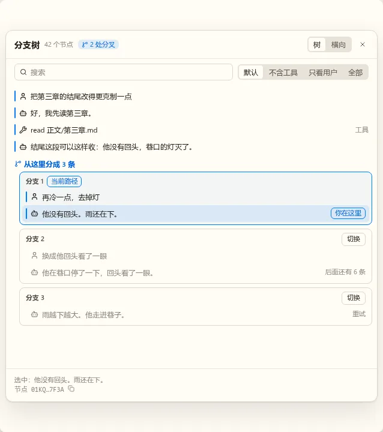
你提的“横向展示、分支点左右调整”，好做，数据和树一样。右上角“树 / 横向”切换。当前路径从左到右一张张卡片，工具调用并进前面那张；分叉的卡片上有“‹ 1 / 3 ›”，点一下这张和后面的都换成那条分支。这时只是预览，点“切换到这条路径”才真的切过去，关掉就放弃：切换会改变接下来发送时的对话历史，不能一点就生效。键盘：左右在卡片之间走，在分叉上按 ‹ › 换分支。放不下时横向滚动，打开时滚到当前位置。
点用户消息的“编辑”，气泡就地变成编辑器，发送后从这里开一条新分支，原来的还在。回复有多个分支时，气泡右下出现“‹ 2/3 ›”。旁边是复制、重试、从此处分支。
“从此处分支”只把对话退回到这条消息之后，不发送，等你写下一句；“重试”退回之后马上再要一次回复。这一批编辑只改文字，@ 引用随批 4，插图随批 5 接上。
从顶栏菜单打开。当前路径亮、别的分支暗，分叉处缩进一级；长的分支可以收起。可搜索，过滤留“默认”“不含工具”“只看用户”“全部”，旧应用的“带标签”不做（没有标签这个功能）。选中一行后底部写节点 id（可复制）和“切换到这条分支”，也支持键盘上下选、回车切换。
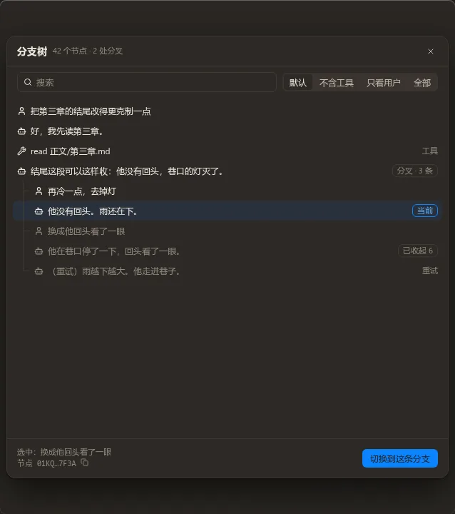
点状态栏的上下文圆环或缓存命中打开，顶栏菜单也有入口。数据是假的。上面是下一次请求的组成和压缩线，中间是缓存（本会话与最近一次的命中率，累计用量），下面三块默认收起的只有系统提示词和诊断。不做缓存时间线与请求选择（已定）。
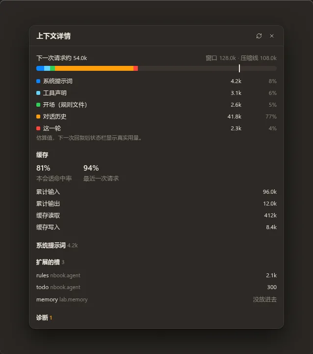
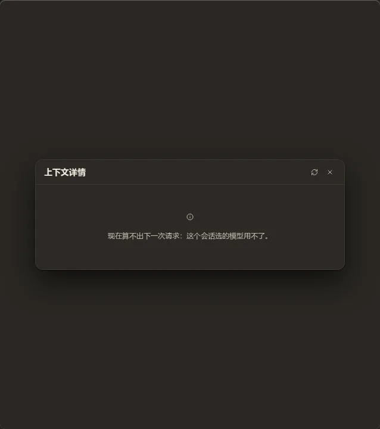
组成用估算值（内核的 preview，不调模型），所以写了“下一次回复后状态栏显示真实用量”。
批 1：模型选择器与状态栏。放在 400px 宽的右栏里看。数据是假的，消息流只占位。
旧应用是 620×440 的两栏弹层，右栏放不下，所以改成与输入框同宽。上面是当前生效的模型和思考档，这部分两种候选相同。旧应用的“角色”“模型库”两个分页留不留，就是这一题。
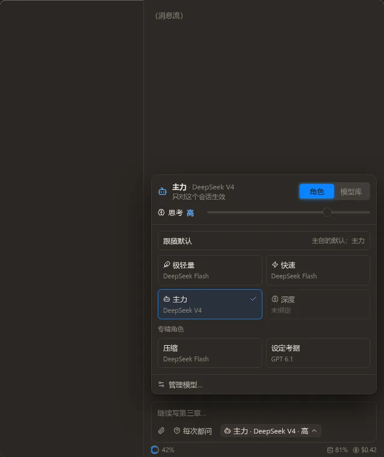
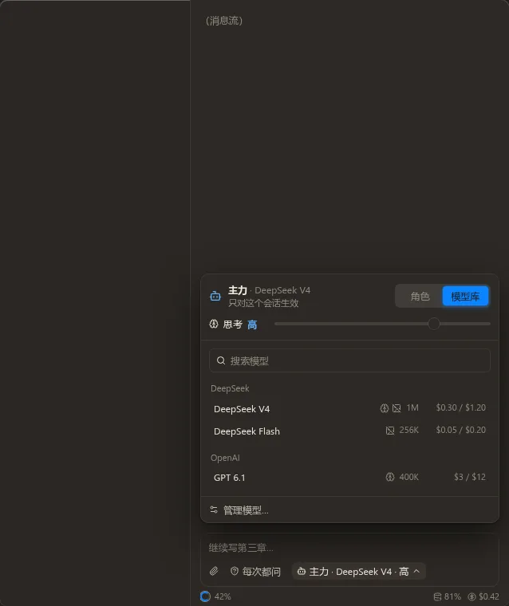
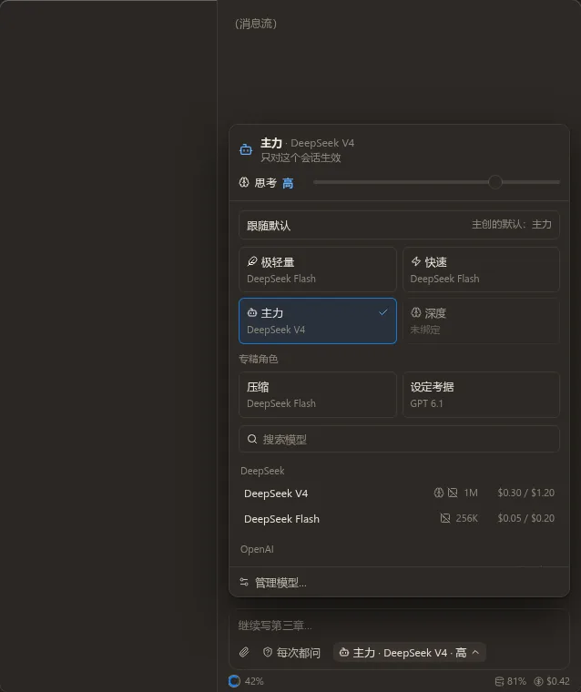
推荐 A。平时只选角色，一页就够，面板也矮；要挑具体模型才切到模型库。B 少点一下，但面板高，要滚动才看得到模型。A 实现时两页用同一高度，切换时面板不跳。
现在右栏窄时缓存命中被让掉了，所以你看不到。改成窄的时候右边只留缓存命中和费用，累计、输入、输出放进悬停。放不下时左边的告警先省略。缓存命中和上下文圆环都能点，打开上下文详情。
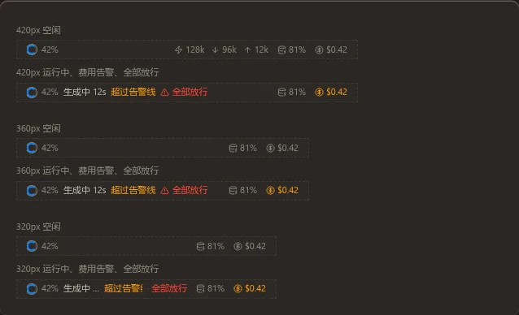
这样可以吗？不可以的话写上想留哪几项。